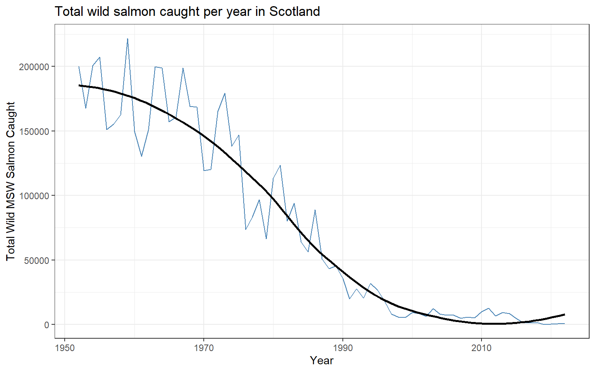

Poisson Regression
Background
In my two-way ANOVA analysis I studied Scotland’s salmon catch data by treating catch numbers as a continuous outcome. But catch counts are really whole-number counts of fish, and count data is often better modeled with a Poisson regression than with methods that assume a normal, continuous response. Here we use the same Scotland “Salmon Catch (1952-2022)” dataset to model how the number of wild salmon caught depends on the fishing region and the year. This lets us ask whether catches have been trending up or down over the decades, and whether some regions consistently land more fish.
Hypothesis
We model the count of wild MSW (multi-sea-winter) salmon as a function of Region and Year using a Poisson GLM.
\[ H_0: \text{Region and Year have no effect on the expected salmon count} \] \[ H_a: \text{At least one of Region or Year affects the expected salmon count} \] \[ \alpha = 0.05 \]
Analysis
We keep complete records with a valid catch count and treat Region as a categorical factor.
The plot below shows total wild salmon caught per year. The trend gives a first look at whether catches have risen or fallen across the study period.
We now fit a Poisson regression predicting the salmon count from Region and Year.
| Estimate | Std. Error | z value | Pr(>|z|) | |
|---|---|---|---|---|
| (Intercept) | 75.46 | 0.0605 | 1247 | 0 |
| RegionEast | 3.169 | 0.003298 | 960.8 | 0 |
| RegionMoray Firth | 1.785 | 0.003389 | 526.6 | 0 |
| RegionNorth | 1.471 | 0.003507 | 419.3 | 0 |
| RegionNorth East | 2.334 | 0.003307 | 705.7 | 0 |
| RegionNorth West | 0.3844 | 0.004002 | 96.05 | 0 |
| RegionOrkney | -1.126 | 0.2 | -5.63 | 1.802e-08 |
| RegionOuter Hebrides | 1.7 | 0.005162 | 329.4 | 0 |
| RegionSolway | 0.7862 | 0.003709 | 212 | 0 |
| RegionWest Coast | -0.394 | 0.004909 | -80.28 | 0 |
| Year | -0.03638 | 3.072e-05 | -1184 | 0 |
(Dispersion parameter for poisson family taken to be 1 )
| Null deviance: | 16809093 on 23139 degrees of freedom |
| Residual deviance: | 10467487 on 23129 degrees of freedom |
The p-values for Year and for the Region terms are far below α = 0.05, so we reject the null hypothesis and conclude that both Year and Region significantly affect the expected number of salmon caught. The sign of the Year coefficient tells us the overall direction of the trend over time, while the Region coefficients show which regions land systematically more or fewer fish.
Checking for Overdispersion
Poisson regression assumes the variance of the counts roughly equals their mean. When the residual deviance is far larger than its degrees of freedom, the data is overdispersed and the Poisson standard errors are too optimistic. We compare the two below.
| Residual.Deviance | Degrees.of.Freedom | Dispersion.Ratio |
|---|---|---|
| 10467487 | 23129 | 452.6 |
The dispersion ratio is well above 1, meaning this catch data is overdispersed, a common situation for ecological counts where a few enormous hauls sit alongside many small ones. In practice this means a negative-binomial model (or a quasi-Poisson adjustment) would give more trustworthy standard errors. We report the Poisson fit but flag this as an important caveat: the significance results should be read with caution.
Interpretation
Modeled as counts, Scotland’s wild salmon catches depend significantly on both the Region fished and the Year, echoing the conclusions of my two-way ANOVA but through a model built specifically for count data. The yearly trend line reveals how catches have shifted across seven decades, and the regional terms confirm that location strongly shapes the expected haul. The key lesson from this analysis is diagnostic: the strong overdispersion warns that raw Poisson standard errors understate the true uncertainty, so a negative-binomial model would be the natural next step for a fully trustworthy result.
Credit/References
This analysis follows the format of my other portfolio analyses and used mild AI assistance for plotting and diagnostics.